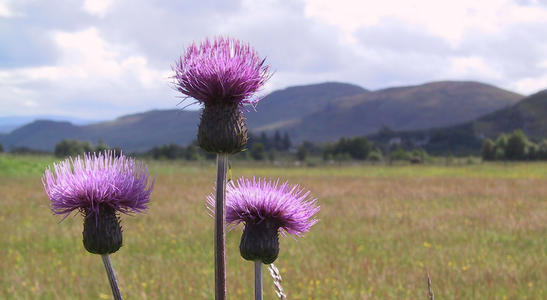

In July 2002, Simon and I did a bike tour in Scotland. There were alot of firsts about this tour: it was Simon's first tour, and it was the first tour I had ever done with other people. We had some disagreements about how to proceed with this tour. On my tours I tend to like to take things a day at a time, and find accomodation at the end of the day when I decide I've had enough. Simon is more conservative and wanted everything booked in advance so we know we'd have a bed to go to, but I didn't want to go to the effort of doing that much planning. We compromised: we let someone else do the planning. Our friends Sue and Neil, whom we know through the local branch of the CTC, are active tour leaders, so we decided to see where they were leading tours this year. They were doing one in Scotland, so we signed on. Simon said before we left that this tour would either make him very fit or would kill him. Happily, the result was the former.
 thistles, Scotland's national flower Here's the day-by-day account of our tour: